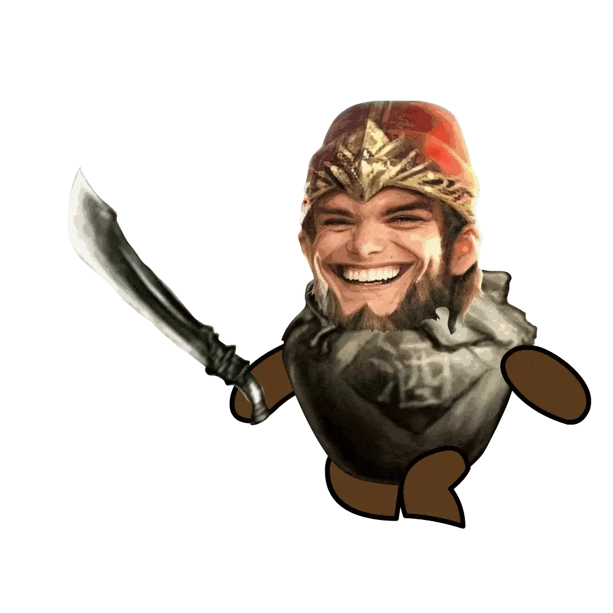

在宿舍玩游戏
我喜欢玩一些开放世界类的游戏,网上较火的是的开放世界的游戏玩了一下
游戏特色：
1.自由度高：玩家可以自由选择游戏中的目标和任务，也可以自由探索游戏世界，而不受限于线性任务的模式。
独特的世界观：游戏世界具有独特的历史、文化背景。玩家可以通过探索游戏内的相关文化元素了解到游戏世界的相关历史背景，也可以通过与游戏世界的NPC互动来获得关于这个世界的相关信息。
主动探索与发现：玩家可以在游戏中自由探索，例如探索宝箱、解谜、打BOSS和进行社交、生活类活动。
